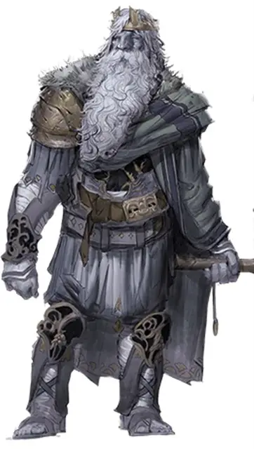

Король Гекатон
King Hekaton
Огромный Великан, хаотично-добрый, именной НИП

Класс Доспеха 16 (чешуйчатый доспех)
Хиты 330 (20к12 + 200)
Скорость 50 футов, плавая 50 футов
| мод | спас | ||
|---|---|---|---|
| СИЛ | 29 | +9 | +14 |
| ЛОВ | 14 | +2 | +2 |
| ТЕЛ | 20 | +5 | +10 |
| мод | спас | ||
|---|---|---|---|
| ИНТ | 16 | +3 | +3 |
| МДР | 18 | +4 | +9 |
| ХАР | 18 | +4 | +9 |
Навыки Атлетика +14, Восприятие +9, История +8, Магия +8
Сопротивление урону холод
Иммунитет к урону звук, электричество
Чувства пассивное Восприятие 19
Языки Общий, Великаний
Опасность 13 (10000 опыта)
Бонус мастерства +5
Среда обитания Побережье, Под водой
Особенности
Амфибия. Великан может дышать и воздухом и под водой.
Использование заклинаний. Базовой характеристикой великана является Харизма (Сл спасброска от заклинания 17). Он может накладывать следующие заклинания, не нуждаясь в материальных компонентах:
• Неограниченно: левитация [levitate], обнаружение магии [detect magic], свет [light];
• 3/день каждое: власть над погодой [control weather], подводное дыхание [water breathing].
Создание крена. Бонусным действием в свой ход Гекатон может переместить свой вес на одну ногу и вызвать крен корабля, на котором он находится. Все прочие существа, стоящие на том же самом корабле должны сделать спасбросок Ловкости Сл 10 или упасть ничком.
Новые опции для великанов. Некоторые взрослые штормовые великаны могут направлять разрушительную силу сквозь свое дело и высвобождать ее с оглушительным топотом. Эта способность представлена в виде следующего действия. (Storm King's Thunder)
Оглушающий топот (Перезарядка 6). Штормовой великан топает по земле, вызывая грохот. Все существа в радиусе 15 футов от великана должны совершить спасбросок Телосложения Сл 17 или получить 33 (6к10) урона звуком и стать глухими до начала следующего хода гиганта. При успешном спасброске, существа получают половину этого урона и не оглохли. Грохот можно услышать на расстоянии до 1200 футов.
Действия
Мультиатака. Великан совершает две атаки обрывком разбитой цепи.
Обрывок разбитой цепи. Рукопашная атака оружием: +14 к попаданию, досягаемость 15 футов, одна цель. Попадание: 19 (3к6+9) дробящего урона.
Корабельная баллиста. Дальнобойная атака оружием: +6 к попаданию, дистанция 120/480 фт., одна цель. Попадание: 16 (3к10) колющего урона.
Удар молнии (перезарядка 5–6). Великан вызывает магическую молнию в точку, которую он видит в пределах 500 футов от себя. Все существа в пределах 10 футов от этой точки должны совершить спасбросок Ловкости Сл 17, получая 54 (12к8) урона электричеством при провале, или половину этого урона при успехе.
Описание
У Гекатона нет скал, чтобы их метать, но он может выдрать с палубы одну из баллист и использовать ее как тяжелый арбалет. В таком случае баллиста становится тяжелым, заряжаемым, двуручным оружием